Mobile network operators increasingly rely on short-horizon traffic forecasts to drive precision resource allocation, congestion avoidance, and energy-saving base-station scheduling. Because demand is generated by millions of independent user decisions aggregated over space and time, cellular traffic exhibits strong, partly predictable temporal structure (daily commuting rhythms, weekly routines) superposed on genuinely stochastic, area-specific variation. Forecasting this signal accurately, at the resolution operators actually consume it (single grid cell, few-minute horizon), is therefore both practically important and a genuinely open modelling question, since the "best" model plausibly depends on how regular and how noisy a given area's traffic is.
This study investigates: how do different sequential models compare for one-step-ahead mobile network traffic forecasting, and how does their performance vary across geographical areas with different traffic characteristics? We use the Telecom Italia "Big Data Challenge" dataset for the city of Milan [1]: Internet, SMS and call activity aggregated onto a 100×100 grid of 10,000 squares at 10-minute resolution over a 62-day period. Rather than searching for a single "best" model in isolation, we treat model choice as a hypothesis informed by the data's own statistical character (Section 4), by prior published results on this and closely related traffic datasets (Section 2), and we test that hypothesis empirically across three areas chosen to have visibly different temporal dynamics (Section 6). We also treat efficient data handling as a first-class part of the problem: the raw dataset is roughly 20.8 GB of uncompressed text, several times larger than the 8.4 GB of RAM available on our working machine, so memory-aware engineering was a practical prerequisite for the rest of the study, not an afterthought (Section 3).
Classical statistical forecasting of cellular/mobile traffic has traditionally relied on ARIMA and exponential-smoothing variants. Zhang & Patras [2], working with this exact Milan dataset, show that plain ARIMA and Holt-Winters exponential smoothing baselines degrade sharply as the forecast horizon grows and the series fluctuates, and propose a deep spatio-temporal network that achieves up to 61% lower error at long horizons by exploiting cross-cell spatial correlation. Jaffry [3], also using the Milan dataset, directly compares ARIMA, a feed-forward network and an LSTM for cellular traffic prediction and finds ARIMA a "decent" but limited baseline, with LSTM both accurate and comparatively fast to train. More broadly, the survey by Aouedi et al. [4] documents a shift in the network-traffic-prediction literature from RNN/LSTM architectures toward attention-based and Transformer models [5][6], motivated by their ability to relate any two time steps directly rather than through a propagated hidden state. At the same time, a widely cited critical study by Zeng et al. [7] shows that simple linear models can match or beat Transformer-based forecasters on many benchmarks, a caution we return to when interpreting our own results in Section 6.
Two points from this literature directly shaped our methodology. First, both Milan-dataset studies above use ARIMA without explicit seasonal terms and evaluate it mainly at longer/recursive horizons, exactly the regime in which ARIMA is known to degrade; this suggested that a fairer classical baseline — and a genuinely different modelling philosophy worth comparing against deep sequence models — should encode the (very strong, see Section 4) daily/weekly seasonality explicitly rather than relying on differencing alone. Hyndman & Athanasopoulos [9] and De Livera et al. [10] describe exactly this approach: dynamic harmonic regression, where Fourier terms encode one or more seasonal periods as exogenous regressors and a low-order ARMA model captures the remaining short-range autocorrelation, which is far cheaper to fit than a full seasonal ARIMA at a 144-step seasonal period. Second, the Transformer's core architectural claim — attention over the whole window — is only useful if the series actually benefits from long-range attention; our own exploratory analysis (Section 4) suggested otherwise for this data, which we treat as a testable design decision in Section 5 rather than an assumption.
The dataset consists of 62 daily files (Nov 1, 2013 – Jan 1, 2014), each a tab-separated
list of (square_id, timestamp_ms, country_code, sms_in, sms_out, call_in, call_out, internet)
records for a 10,000-square Milan grid at 10-minute resolution, downloaded from Harvard Dataverse
[1]. Across the 62 unique days this totals 20.80 GB of
uncompressed text and roughly 300–376 MB (4.3–4.9 million rows) per day, since each
square/interval combination generates one row per distinct roaming country code observed. We only
need the aggregate Internet-traffic signal per square per interval, summed across country codes, so
the bulk of this volume is discarded during preprocessing — but it still has to be read once.
Our working machine has 8.4 GB of RAM, less than half the raw dataset size, so naively
concatenating all 62 days into a single pandas DataFrame with default dtypes is not an
option. We measured this directly rather than assuming it: loading a single day
(2013-11-01, 4,842,625 rows) with pandas.read_csv's default settings (all 8
columns, int64/float64 dtypes) used 309.9 MB of DataFrame memory and
raised process RSS by 311.8 MB in 6.2 s. Linearly extrapolated to all 62 days, that is
≈19.3 GB — more than double the available RAM — so this naive approach was never
run at full scale; it would very likely exhaust memory and crash or swap heavily.
Instead, each day is streamed directly out of its zip archive in 500,000-row chunks with
usecols restricted to the three needed columns and compact dtypes
(square_id: int16, timestamp: int64, internet: float32),
and each chunk is aggregated (summed over country code, grouped by square and interval) before the
next chunk is read, so the ~4.8M raw rows of a day are never simultaneously resident in memory. On the
same sample day this reduced the aggregated in-memory footprint to 20.2 MB (from 309.9 MB,
a 15.4× reduction) with a peak process RSS of only 118.4 MB while processing the whole day
(vs. 390.2 MB naive), at a modest cost of 8.9 s (vs. 6.2 s) — the extra time buys a
dramatically smaller and, crucially, bounded memory footprint that does not grow with dataset
size. Running this pipeline over all 62 days produced 89,127,473 aggregated
(square, interval, traffic) rows, a full-dataset in-memory size of 1,247.8 MB, and a peak
process RSS across the entire 11.8-minute run of only 1,360.5 MB — comfortably inside the
8.4 GB budget with headroom for the rest of the analysis. The resulting dataset is written once to
a single Parquet file of 557.8 MB, a 37.3× reduction from the 20.80 GB of
raw text, and is Snappy-compressed and sorted by square_id, so downstream code can pull
a single square's full 62-day series via predicate pushdown in well under 0.1 s instead of
scanning the whole dataset.
| Approach | Rows | DataFrame memory | Peak process RSS | Time |
|---|---|---|---|---|
Naive (read_csv, default dtypes, 8 cols) | 4,842,625 | 309.9 MB | 390.2 MB | 6.2 s |
| Optimised (chunked, 3 cols, compact dtypes, pre-aggregated) | 1,439,946 | 20.2 MB | 118.4 MB | 8.9 s |
| Metric | Value |
|---|---|
| Raw uncompressed text | 20.80 GB |
| Aggregated rows (square × interval) | 89,127,473 |
| Full in-memory size | 1,247.8 MB |
| Peak process RSS (whole run) | 1,360.5 MB |
| Final Parquet file on disk | 557.8 MB (37.3× smaller than raw text) |
| Total ETL wall-clock time | 11.8 min (706 s) |
Trade-offs and limitations. Aggregating across country codes at ingestion time discards the per-country breakdown permanently — acceptable here since only total Internet activity is needed, but it would need to be revisited for roaming-specific analyses. Streaming directly from the zip archive avoids ever extracting ~20.8 GB to disk, at the cost of re-opening each archive entry per run; since the pipeline is run once and the output is a small Parquet file, this was judged the better trade-off for our disk budget (131 GB free). Reference: chunked, dtype-aware processing of oversized tabular data with pandas is standard practice recommended in the pandas project's own scaling documentation and general data-engineering literature [11].
All squares' total Internet traffic over the full 62-day period is strongly right-skewed (Fig. 1): most of the 10,000 grid cells carry little traffic (many are outside the city centre or only partially populated), while a small number of central/commercial cells carry disproportionately more. This long-tailed, "few hotspots dominate" shape is typical of urban activity data and is the reason the forecasting task in Section 5 is run on areas selected to sample across this range rather than only on the single busiest cell.
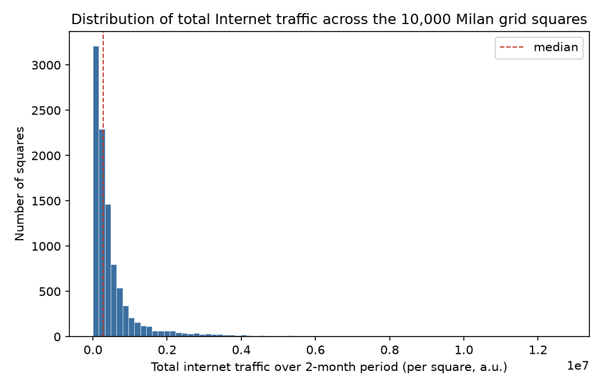
The three highest-traffic squares are 5161 (12,740,060), 5059 (11,170,854) and 5259 (10,485,778) (Table 3). Figure 2 shows their first two weeks alongside squares 4159 and 4556, specified by the assignment as lower-traffic comparison points.
| Rank | Square ID | Total Internet traffic |
|---|---|---|
| 1 | 5161 | 12,740,060 |
| 2 | 5059 | 11,170,854 |
| 3 | 5259 | 10,485,778 |
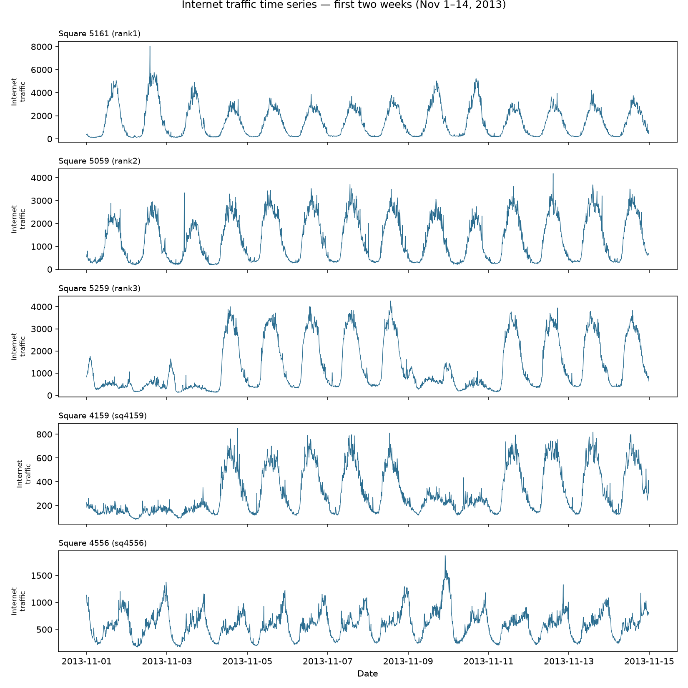
All five series share the same basic diurnal shape — a deep overnight trough and a daytime peak — but differ substantially in how regular that shape is. Square 5161 shows by far the largest and sharpest peak of the whole window on the very first day (≈8,044, roughly 2–3× its typical weekday peak of ~3,000–5,000); notably, November 1, 2013 was Ognissanti (All Saints' Day), a national holiday in Italy, which plausibly explains a one-off surge of out-of-routine activity in this high-traffic square, followed by an elevated weekend (Nov 2–3) before settling into a more regular weekday/weekend rhythm. Square 5059's peaks are comparatively uniform across weekdays and weekends, consistent with a more homogeneous, less event-driven usage pattern (e.g. a mixed office/residential area). Square 5259 shows a clear, sustained level shift around Nov 4: both its baseline and peak roughly double and remain elevated for the rest of the window, an abrupt regime change rather than a gradual trend, that we cannot attribute to a specific cause from the data alone but flag as a genuine anomaly. Square 4556 exhibits a single sharp, isolated spike around Nov 10 (a Sunday) far above its usual envelope, again suggestive of a localised one-off event rather than routine demand. Square 4159 is the most regular of the five, with a low-amplitude, highly repeatable daily cycle and no obvious anomalies in this window.
We decomposed the full 62-day series of the busiest square (5161) with STL (period = 144,
one day) and ran an Augmented Dickey-Fuller test on both the raw series and the STL residual
(Fig. 3). The seasonal component accounts for 82.2% of total variance, versus
3.3% for the (slowly drifting, largely flat) trend and 14.5% for the residual — this series is
overwhelmingly seasonality-driven. The ADF test strongly rejects a unit root on both the raw series
(statistic −19.03, p ≈ 0) and the STL residual (statistic −12.24,
p ≈ 1.0×10−22), i.e. the series is stationary in the classical
ADF sense once its dominant, near-deterministic daily cycle is accounted for. This directly motivated
not differencing the series in Model 1 (Section 5): a fixed d = 0, with
seasonality captured deterministically via Fourier terms, is statistically justified rather than an
arbitrary simplification. The STL trend panel also shows a visible decline in the final days of the
window (late December), consistent with reduced activity in the run-up to the Christmas/New Year
holidays in this presumed commercial area.
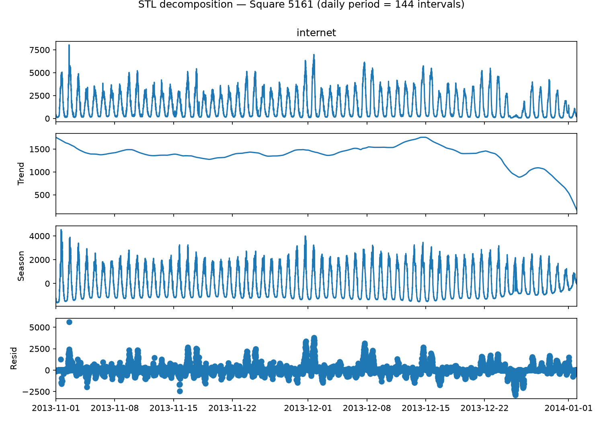
Figure 4 shows the ACF and PACF of square 5161 up to 300 lags (≈2 days). The ACF has the classic slowly-decaying sinusoidal shape of a strongly periodic series, peaking near lag 144 (one day) and lag 288 (two days). The PACF, in contrast, cuts off sharply: only the first 2–3 lags carry substantial partial autocorrelation, with everything beyond essentially inside the confidence band. This is an important, directly actionable finding: once the deterministic daily cycle is modelled explicitly, almost all of the remaining autoregressive signal is short-range, so (a) a low-order ARMA is sufficient for the residual dynamics of Model 1, and (b) for the deep sequence models, a full one-day window (144 steps) is enough context to see the diurnal shape directly, without needing to attend across many days.
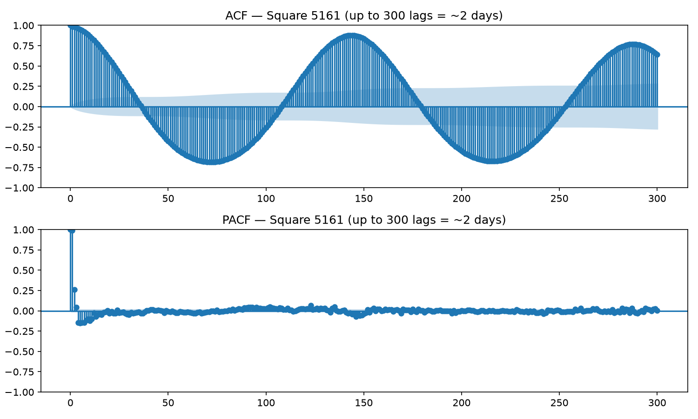
Formally, at each 10-minute interval t the model receives the true history xt up to and including t for a given area a, and must produce an estimate of xa(t+1). This is evaluated as one-step-ahead forecasting throughout: at every point in the test week, models are conditioned on real observed history, never on their own previous predictions (i.e. no recursive multi-step rollout). Each area's 62-day series is split, on the raw local timestamps (Europe/Rome), into a training period (Nov 1 00:00 – Dec 15 23:50, 6,480 steps / 45 days) and the assignment's required evaluation week (Dec 16 00:00 – Dec 22 23:50, 1,008 steps). For the two deep models, the last 7 days of the training period (Dec 9–15) are held out, in time order, as a validation split for early stopping; no information from the test week is used to select any hyperparameter.
Areas. Three areas are forecast, matching the assignment's requirement of 9 plots / 3 tables: square 5161 (highest total traffic, mandated by the assignment) and squares 4159 and 4556, both already characterised in Section 4. These three were chosen specifically because the EDA showed them to be qualitatively different: 5161 is a high-magnitude, event-sensitive hotspot with the largest STL residual share of the areas examined; 4159 is a low-magnitude, highly regular series with no observed anomalies; 4556 is low-magnitude but contains a distinct anomalous spike, i.e. more outlier risk than its typical short-run volatility would suggest. This gives a direct empirical handle on the research question of whether model performance varies with an area's traffic character, rather than only its traffic volume.
Structure. A linear regression on deterministic Fourier terms for daily
(period 144, 4 harmonics) and weekly (period 1008, 3 harmonics) seasonality — 14
exogenous regressors in total — with an ARMA(3,1) model for the regression residuals, fit jointly
by exact Gaussian MLE via a state-space (Kalman filter) representation (statsmodels.SARIMAX).
Input representation. The regressors are a deterministic function of each timestamp
(sin/cos pairs at 4 daily and 3 weekly frequencies), not derived from the target series itself, so no
windowing or scaling of the target is required; the raw traffic values are modelled directly.
Training / inference. Parameters are estimated once by MLE on the training period.
Test-week one-step-ahead forecasts are then produced by instantiating the same model over the
full train+test range with the trained parameters fixed (filter(), no re-estimation) and
reading off get_prediction(dynamic=False) over the test range — the Kalman filter
naturally incorporates each true new observation as it becomes available, which is the
one-step-ahead protocol.
Rationale. A full seasonal ARIMA with a 144-step seasonal order was considered and
rejected on computational grounds: the state-space dimension used by exact MLE scales with the
seasonal period, making it prohibitively slow to fit repeatedly (per area) at 10-minute resolution over
multi-week windows. Fourier-term seasonality plus a short ARMA is the standard, much cheaper alternative
for high-frequency data with multiple seasonal periods [9][10],
and Section 4 gave two direct, dataset-specific justifications for it: the STL decomposition showed the
series is 82% seasonal variance with a near-deterministic daily shape (a good match for fixed Fourier
regressors), and the ADF test supported d=0 (no differencing needed).
Hyperparameter tuning (documented). With d=0 fixed from the EDA
evidence above, we grid-searched (p, q) for p ∈ {0,1,2,3},
q ∈ {0,1,2} (12 fits) on the primary area (5161) by AIC. AIC ranged from
164,423.9 (p=0, q=0, i.e. white-noise residuals — clearly inadequate, confirming
the PACF finding that some short-range AR structure remains after the harmonic regression) down to a
minimum of 88,018.7 at (p=3, q=2). We selected (p=3, q=1)
instead, whose AIC (88,019.0) is within 0.3 of the minimum: the extra MA parameter at (3,2) bought a
negligible AIC improvement, so the more parsimonious model was preferred (fewer parameters, faster to
fit, lower overfitting risk). This order was reused unchanged for the other two areas (their in-sample
AIC of 66,390.4 and 73,484.3 are not directly comparable to area 5161's, since the series are on
different scales, but residual diagnostics and the visual fit in Section 6 were both acceptable).
Structure. A 2-layer stacked LSTM (64, then 32 units), each followed by 10% dropout,
with a final Dense(1) regression head. Input representation. A sliding
window of the last 144 (= 1 day) readings, min-max scaled to [0, 1] with a scaler fit only on the
training portion of the series (to avoid test-period leakage); window length was set directly from the
EDA (Section 4.2), which showed the strongest periodicity and virtually all short-range autocorrelation
within a one-day span. Training. MSE loss, Adam (lr = 10−3),
batch size 256, up to 40 epochs with early stopping (patience 5 on validation loss, best weights
restored); trained on windows from the training split only, validated on the last 7 training days.
Rationale: recurrent gating lets the network learn nonlinear temporal dependencies directly from data
without assuming additive/linear seasonality, and LSTM is the deep model most consistently reported to
outperform plain ARIMA on this exact dataset in prior work [2][3].
Given the training cost of the deep models on CPU-only hardware (Section 6), we did not run an
exhaustive hyperparameter grid for the LSTM; architecture and window length were fixed a priori from
the EDA and from standard practice for medium-length univariate series, and the one documented,
evidence-driven iteration we performed on a deep model was applied to the Transformer (below), where
the EDA gave a specific, testable reason to expect a design flaw.
Structure. A 2-layer Transformer encoder (model width 32, 4 attention heads,
feed-forward width 64) over the same 144-step scaled input window as the LSTM, with a fixed sinusoidal
positional encoding (self-attention has no inherent notion of order) and a final Dense(1)
head. Rationale. Self-attention lets the model relate any two time steps directly
— e.g. the same time-of-day 144 steps in the past — without propagating information through
a recurrent hidden state, and Transformer variants are increasingly reported for cellular traffic
forecasting [4]; it is architecturally the most different of the three models from
both the linear DHR-ARMA baseline and the recurrent LSTM, which is the point of including it in this
comparison.
Hyperparameter/architecture iteration (documented). Our first configuration pooled the encoder output with global average pooling across all 144 positions before the regression head — a common default. Tested on area 5161 (40 epochs, batch 256, patience 5), it gave MAE 204.4 / RMSE 295.6 / MAPE 26.6%, clearly worse than the LSTM under the same protocol (MAE 121.6 / RMSE 177.7 / MAPE 15.0%). This is exactly what Section 4.2's PACF result would predict: with almost all of the (non-seasonal) predictive signal concentrated in the last 2–3 lags, averaging the representation over the full 144-step window dilutes that signal. We therefore changed the pooling to use only the representation at the last time step (analogous to how causal/decoder-style Transformers use the final hidden state for next-token prediction), and, to keep training time reasonable on CPU, also increased the batch size (256→512) and lowered the maximum epoch budget (40→25, patience 5→4). Under the new configuration, MAE fell to 130.6 and RMSE to 175.2 (now marginally better than the LSTM's RMSE), though MAPE remained higher (20.7%). We did not run a controlled ablation isolating the pooling change from the batch/epoch change, which is a limitation of this comparison; however, the fact that error improved substantially despite a smaller epoch budget is more consistent with the architectural fix than with the training schedule change, and it is the fix we had a specific, EDA-grounded reason to expect would help. This final configuration (last-token pooling, batch 512, 25 epochs, patience 4) is what was run for all three areas in Section 6.
All hardware/timing figures below were recorded on the same machine used throughout this study: an
8-core CPU, 8.4 GB RAM, no CUDA-capable GPU (TensorFlow 2.17, CPU execution only). Fit time is
wall-clock time for model.fit (LSTM/Transformer) or MLE estimation (DHR-ARMA) on the
45-day training period; predict time is wall-clock time to produce all 1,008 one-step-ahead forecasts
for the Dec 16–22 test week for that area. Performance is reported with MAE, RMSE (root mean
squared error, i.e. the square root of MSE), MAPE, and coefficient of determination (R²).
| Model | MAE | RMSE | MAPE (%) | R² |
|---|---|---|---|---|
| DHR-ARMA | 82.24 | 123.30 | 8.62 | 0.992 |
| LSTM | 109.66 | 156.12 | 14.66 | 0.987 |
| Transformer | 164.33 | 231.60 | 20.56 | 0.971 |
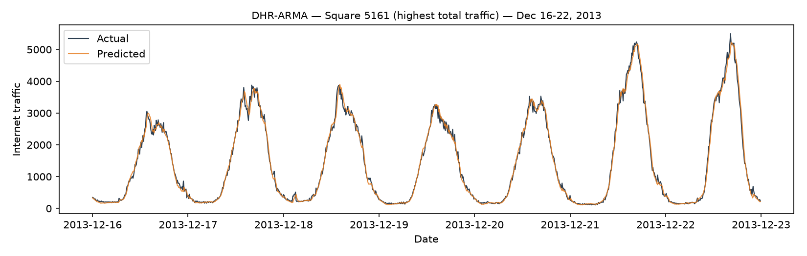
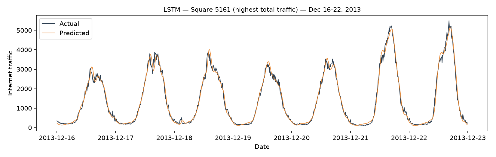
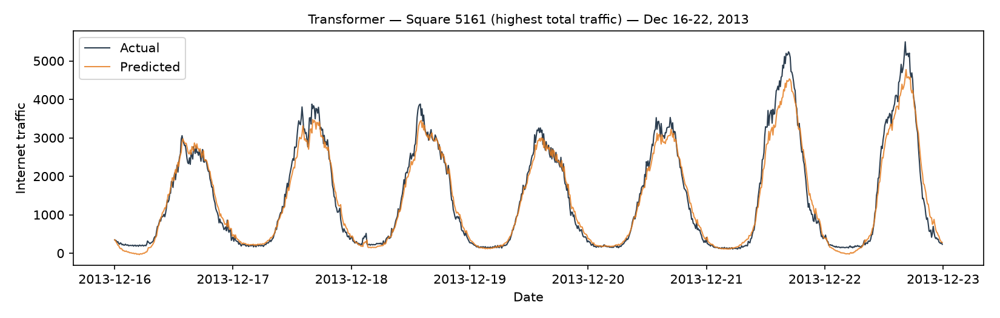
Figure 5a–c. Actual vs. predicted Internet traffic, Square 5161, Dec 16–22, 2013.
| Model | MAE | RMSE | MAPE (%) | R² |
|---|---|---|---|---|
| DHR-ARMA | 15.07 | 20.10 | 6.94 | 0.973 |
| LSTM | 18.68 | 23.99 | 9.14 | 0.961 |
| Transformer | 16.25 | 21.82 | 7.18 | 0.968 |
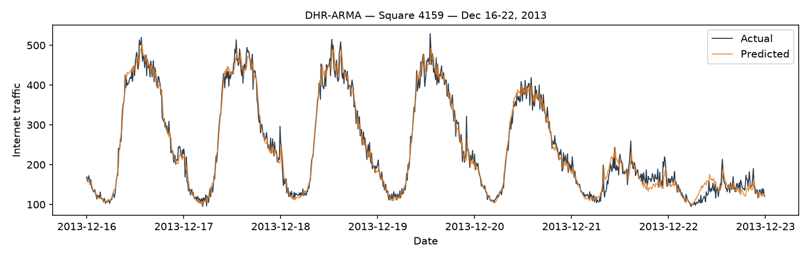
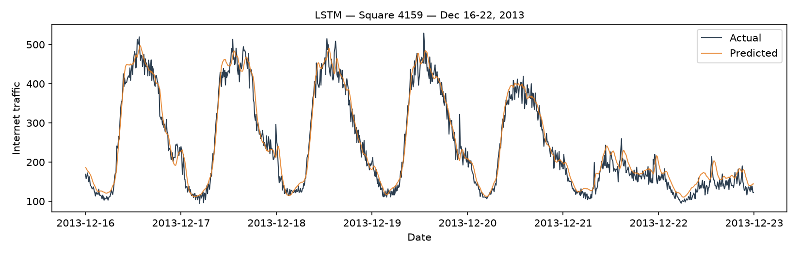
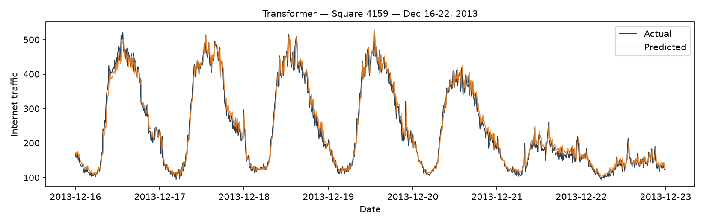
Figure 6a–c. Actual vs. predicted Internet traffic, Square 4159, Dec 16–22, 2013.
| Model | MAE | RMSE | MAPE (%) | R² |
|---|---|---|---|---|
| DHR-ARMA | 26.99 | 35.86 | 6.33 | 0.951 |
| LSTM | 30.30 | 39.35 | 7.25 | 0.942 |
| Transformer | 41.33 | 50.77 | 11.95 | 0.903 |
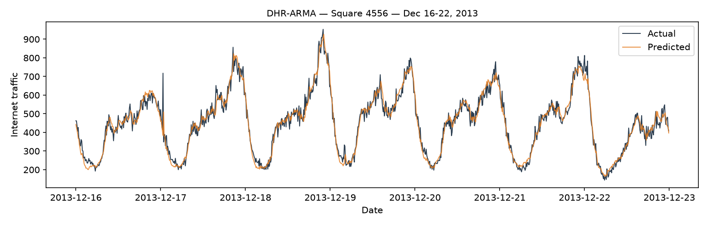
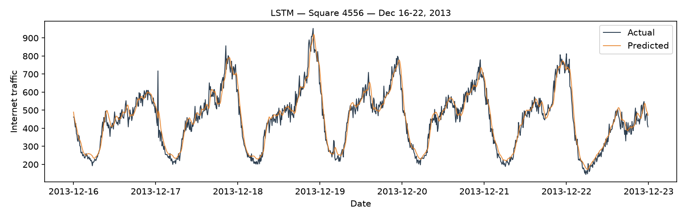
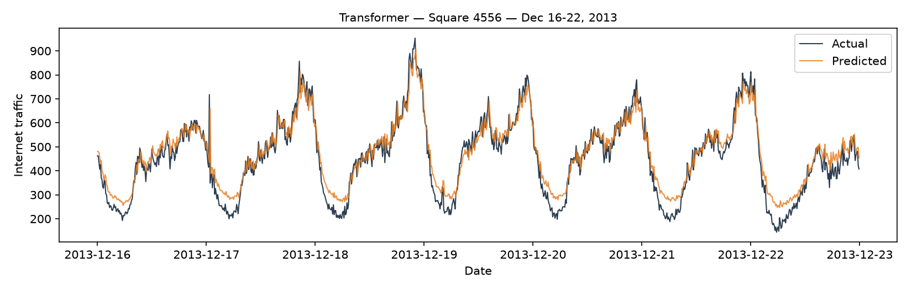
Figure 7a–c. Actual vs. predicted Internet traffic, Square 4556, Dec 16–22, 2013.
| Model | Area | Fit time (s) | Predict time, 1,008 steps (s) | Params |
|---|---|---|---|---|
| DHR-ARMA | 5161 | 7.1 | 0.31 | 19 |
| DHR-ARMA | 4159 | 8.4 | 0.41 | 19 |
| DHR-ARMA | 4556 | 7.3 | 0.41 | 19 |
| LSTM | 5161 | 362.7 | 2.03 | 29,345 |
| LSTM | 4159 | 397.3 | 4.24 | 29,345 |
| LSTM | 4556 | 514.6 | 1.85 | 29,345 |
| Transformer | 5161 | 524.0 | 2.23 | 17,185 |
| Transformer | 4159 | 382.2 | 3.17 | 17,185 |
| Transformer | 4556 | 497.1 | 2.72 | 17,185 |
DHR-ARMA is 40–70× faster to fit than either deep model and its per-step prediction time is negligible (a single Kalman-filter pass), since it has only 19 free parameters against 29,345 (LSTM) and 17,185 (Transformer). LSTM and Transformer fit times both vary with how quickly early stopping triggers (e.g. Transformer on 4159 stopped after only 18 epochs, vs. running the full 25-epoch budget on 5161 and 4556) rather than any fixed per-area cost.
DHR-ARMA is the strongest model on every metric, in every area, and is also by far the cheapest to fit. This is a real and, on reflection, explicable result rather than an artefact: our evaluation protocol is strictly one-step-ahead with true lagged inputs (Section 5.1), and Section 4.2's PACF showed that, once the deterministic daily/weekly cycle is removed, almost all remaining predictive signal sits in the last 2–3 lags — precisely the regime a low-order ARMA model with correctly specified seasonal regressors is built to exploit optimally (via exact Gaussian MLE), at a fraction of the parameters and training time of the deep models. This is not a contradiction of Zhang & Patras [2] or Jaffry [3], who both found LSTM beating ARIMA on this same dataset: both used ARIMA without explicit seasonal (Fourier) terms and evaluated mostly at longer or recursive horizons, exactly the setting in which classical linear models are known to degrade fastest [7][9]. Our result is best read as showing that which classical model, and how it is evaluated, matters as much as the statistical-vs-deep-learning distinction itself.
LSTM consistently outperforms the Transformer across all three areas and all three metrics, even after the last-token pooling fix in Section 5.4 substantially closed the gap. A plausible explanation is architectural inductive bias: recurrence inherently privileges the most recent inputs (each step directly updates from the previous hidden state), which matches this data's PACF-confirmed recency structure "for free," whereas the Transformer must learn that same recency weighting from data via attention, with roughly 40% fewer training examples in each area's 45-day training period than would typically be used to train an attention model of this size from scratch. This is consistent with Zeng et al.'s broader finding [7] that Transformer-family forecasters do not automatically outperform simpler sequence models, and underscores that architectural sophistication is not, by itself, evidence of a better fit to a given series.
Performance varies with an area's traffic character, not just its traffic volume. Absolute errors (MAE, RMSE) scale with each area's raw traffic magnitude, as expected, but relative error (MAPE) is a cleaner cross-area comparison: square 5161 (the highest-traffic hotspot) has substantially worse MAPE than either 4159 or 4556 under every model (8.6–20.6% vs. 6.3–11.9%), consistent with its markedly higher STL residual variance share (14.5%, Section 4.1) and the event-driven volatility identified in Section 4 (the Nov 1 holiday spike). Interestingly, square 4159 — the most regular of the five squares examined in Section 4 — forecasts better than square 4556 across all three models, even though 4556's first-two-week coefficient of variation (std/mean = 0.43) is actually lower than 4159's (0.61). The likely explanation is that 4556 carries occasional sharp, atypical spikes (Section 4, and visible again in Fig. 7 on Dec 17) that a two-week variability summary does not fully capture but that one-step error metrics penalise heavily whenever a model fails to anticipate them. In short: an area's typical volatility and its tail (spike) risk are different properties, and only a spike-aware evaluation window (or a longer/more representative one) reveals the difference.
The Transformer on square 5161 (Fig. 5c) systematically underestimates the evening peaks on Dec 21–22 (predicting ≈4,500 against actual values of 5,200–5,500, a weekend approaching the Christmas shopping period) and, at the opposite extreme, occasionally predicts slightly negative traffic during the deepest overnight troughs on Dec 16–18 — a physically impossible value the model was never constrained to avoid. The same model on square 4556 (Fig. 7c) shows the mirror-image bias: it systematically overestimates the low overnight troughs (predicting ≈300–400 against actual values often below 200) while tracking the daytime peaks reasonably well. Both patterns point to the same underlying cause: an MSE-trained, dropout-regularised network with a comparatively small training set (≈5,300 windows per area) tends to shrink its predictions toward the conditional mean, under-committing to the tails of the distribution it has seen less often. For square 5161 specifically, the growing weekend peaks late in the test week are also a mild distribution shift relative to the bulk of the Nov–Dec training data (a plausible early-holiday-season effect echoing the Nov 1 anomaly noted in Section 4); a fixed, already-trained network cannot adapt to this online, whereas DHR-ARMA's Kalman filter incorporates each new true observation as it arrives and tracks such local shifts immediately — a concrete, mechanistic reason the classical model's advantage is largest in exactly the area where this kind of shift occurs.
Although the Milan dataset is aggregated at the level of a 235×235 m grid cell and does not contain individual user identifiers, mobility and traffic data of this kind still raise privacy and governance questions that any operational deployment would need to address explicitly. Fine-grained spatio-temporal traces can, in principle, be combined with auxiliary information to re-identify users or infer sensitive attributes (home/work location, routine, social ties), even when records are anonymised at collection time [12]. Operators and researchers therefore have a duty to apply strict access controls, minimise retention, and avoid publishing cell-level forecasts or raw counts for areas so small that they could reveal individual behaviour.
From a policy perspective, traffic forecasts directly inform how network capacity is allocated: base-station activation, spectrum assignment, and congestion management. Accurate forecasting in high-traffic commercial areas (such as square 5161 in this study) can improve service quality for many users, but systematic under-forecasting in lower-traffic or peripheral squares risks under-provisioning and degraded connectivity for communities that already receive less investment — a form of infrastructural bias that deserves monitoring, not just optimising aggregate citywide error. Our results show that relative forecast difficulty varies substantially by area (Section 6.5), which supports the case for area-aware service-level targets rather than a single global accuracy threshold.
Finally, the dataset itself is subject to terms of use on Harvard Dataverse: it may be used for research but redistribution and commercial reuse are restricted. Any practitioner applying models trained on this data to live network management would need separate consent from the data provider and compliance with applicable data-protection law (e.g. GDPR in the EU context of Milan). Forecasting systems should also be designed so that operators can explain and audit predictions affecting resource decisions, particularly where automated scheduling affects energy use or service availability during peak demand.
On this dataset, under a strict one-step-ahead evaluation with real lagged inputs, a carefully-specified classical model — Fourier-term seasonality plus a low-order ARMA — outperformed both an LSTM and a Transformer on every area and every metric tested, while requiring roughly two orders of magnitude less training time. This does not mean classical models are "better" in general; it means that for a series whose PACF shows almost all non-seasonal predictive signal in the last 2–3 lags, and whose seasonality is well captured deterministically, the inductive bias a linear seasonal model encodes for free is difficult for a data-hungry deep model to out-learn from 45 days of training data, particularly in a one-step, non-recursive setting. Between the two deep models, the LSTM's recurrent recency bias gave it a consistent edge over the Transformer's learned attention, though a documented, EDA-motivated architecture change (pooling at the last time step rather than averaging across the window) closed much of that gap and is itself evidence that Transformer performance on this kind of series is sensitive to design choices that should be grounded in the data's own autocorrelation structure rather than applied as defaults. Forecast accuracy also varied systematically with each area's traffic character: the busiest, most event-sensitive area was hardest to forecast in relative terms, and areas with rare spikes were harder than their short-run volatility alone would suggest.
Limitations. The DHR-ARMA order was tuned on one area and reused for the other two without re-tuning; the LSTM's architecture and window length were fixed from EDA evidence and standard practice rather than an exhaustive search, given the CPU-only training budget (Section 5.3); and the Transformer's pooling-vs-training-schedule change was not ablated in isolation (Section 5.4). All three models are purely univariate/single-area; none exploits spatial correlation between neighbouring squares, which prior work on this exact dataset shows can materially improve accuracy [2]. The evaluation window is a single week, so the spike-sensitivity finding in Section 6.5 should be treated as suggestive rather than conclusive.
Future work. A natural next step is a spatio-temporal extension (e.g. a ConvLSTM or graph-based model over neighbouring squares) to test whether the deep models' relative disadvantage here is specific to the univariate setting. A systematic (e.g. grid-search, as permitted by the assignment) hyperparameter search for the LSTM and a controlled ablation of the Transformer's pooling strategy would sharpen the causal claims made in Section 5.4 and 6.5. Finally, evaluating over multiple, non-adjacent test weeks (including a genuine holiday period, given the Nov 1 and approaching-Christmas effects observed here) would test whether the classical model's advantage persists outside the specific week studied, or whether it is partly an artefact of a comparatively "easy," non-anomalous test week.
[1] G. Barlacchi, M. De Nadai, R. Larcher, A. Casella, C. Chitic, G. Torrisi, F. Antonelli, A. Vespignani, A. Pentland, B. Lepri. "A multi-source dataset of urban life in the city of Milan and the Province of Trentino." Scientific Data 2, 150055 (2015). https://doi.org/10.1038/sdata.2015.55
[2] C. Zhang and P. Patras. "Long-Term Mobile Traffic Forecasting Using Deep Spatio-Temporal Neural Networks." ACM MobiHoc 2018. arXiv:1712.08083.
[3] S. Jaffry. "Cellular Traffic Prediction with Recurrent Neural Network." arXiv:2003.02807 (2020).
[4] O. Aouedi, V. A. Le, K. Piamrat, Y. Ji. "Deep Learning on Network Traffic Prediction: Recent Advances, Analysis, and Future Directions." ACM Computing Surveys, 57(6), 2025.
[5] A. Vaswani, N. Shazeer, N. Parmar, et al. "Attention Is All You Need." NeurIPS 2017.
[6] H. Zhou, S. Zhang, J. Peng, S. Zhang, J. Li, H. Xiong, W. Zhang. "Informer: Beyond Efficient Transformer for Long Sequence Time-Series Forecasting." AAAI 2021.
[7] A. Zeng, M. Chen, L. Zhang, Q. Xu. "Are Transformers Effective for Time Series Forecasting?" AAAI 2023.
[8] S. Hochreiter and J. Schmidhuber. "Long Short-Term Memory." Neural Computation, 9(8), 1735–1780 (1997).
[9] R. J. Hyndman and G. Athanasopoulos. Forecasting: Principles and Practice, 3rd ed. OTexts, 2021, ch. 12.
[10] A. M. De Livera, R. J. Hyndman, R. D. Snyder. "Forecasting Time Series With Complex Seasonal Patterns Using Exponential Smoothing." Journal of the American Statistical Association, 106(496), 1513–1527 (2011).
[11] pandas development team. "Scaling to large datasets." pandas documentation, https://pandas.pydata.org/docs/user_guide/scale.html
[12] Y.-A. de Montjoye, C. A. Hidalgo, M. Michell, and A. Clauset. "Unique in the Crowd: The Privacy Bounds of Human Mobility." Scientific Reports, 3, 1376 (2013). https://doi.org/10.1038/srep01376
Dataset: https://dataverse.harvard.edu/dataset.xhtml?persistentId=doi:10.7910/DVN/EGZHFV